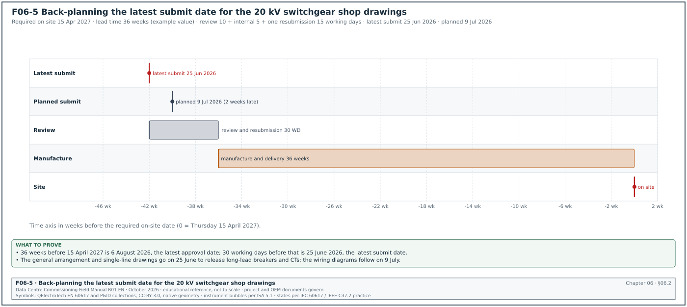
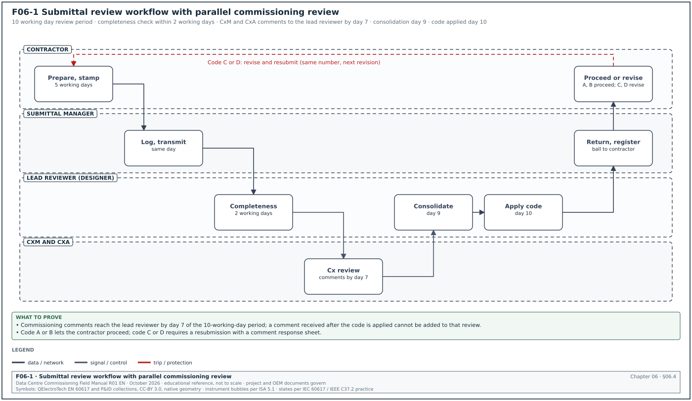
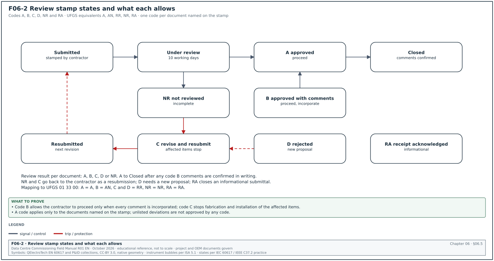
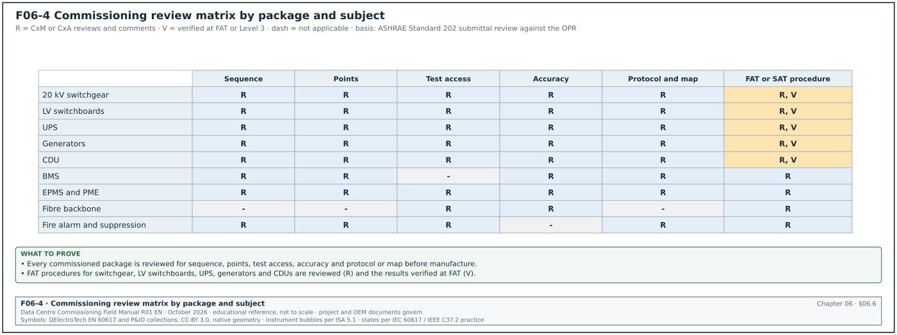
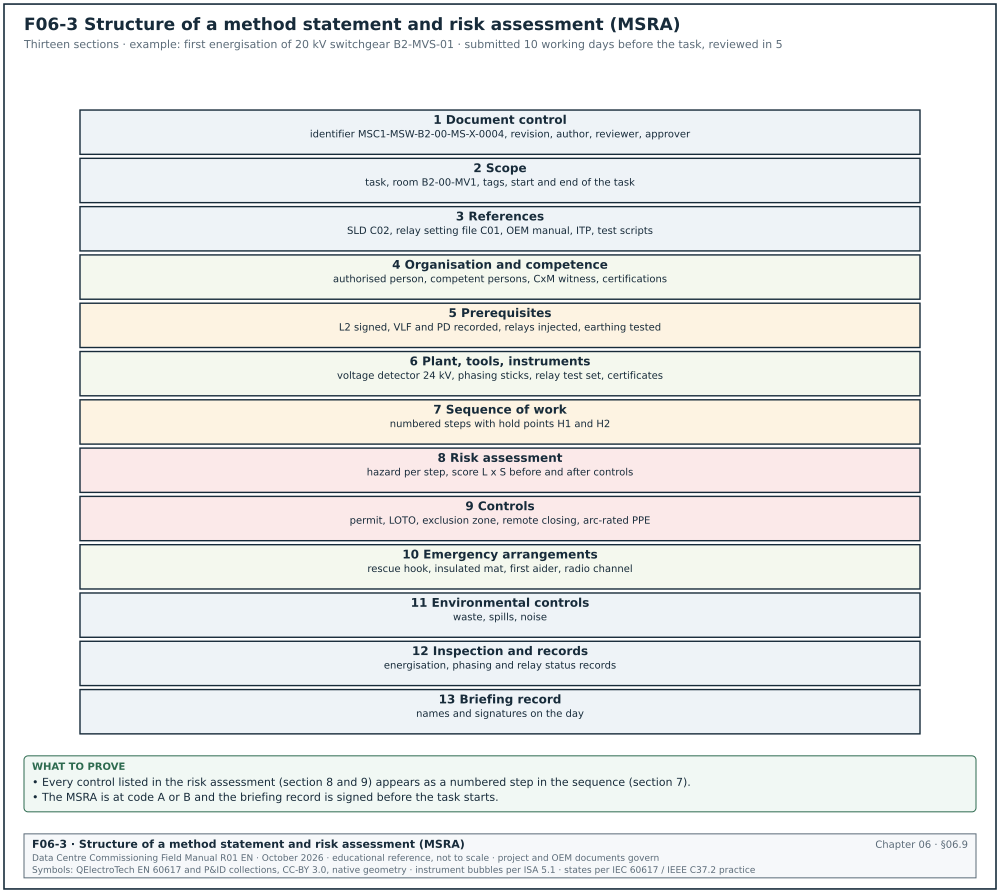
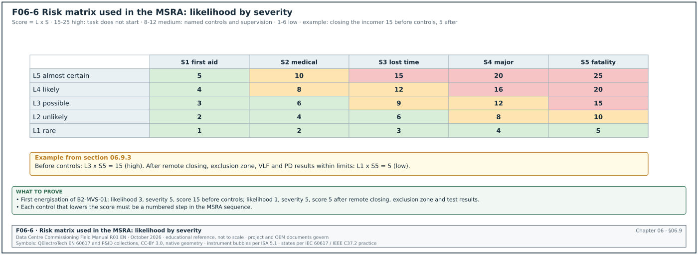

06.0Scope of this chapter
This chapter explains how the contractor's proposals for products, drawings, calculations and work methods are prepared, submitted, reviewed and approved on a hyperscale data-centre campus. It also states what the commissioning manager (CxM) and the commissioning authority (CxA) check in each one so that the installed equipment can be tested. It also covers the method statement and risk assessment (MSRA) and the factory acceptance test (FAT) procedure, which are reviewed through the same process. Chapter 04 covers the common data environment (CDE), status codes and transmittals, chapter 05 covers requests for information (RFI), and chapter 07 covers inspection and test plans.
- Submittal types. Product data, shop drawings, samples, calculations, test reports, certificates, operation and maintenance (O&M) information and warranties, with the difference between action and informational submittals.
- Submittal schedule and register. Fields and lead time planning back from the required on-site date. A filled schedule covers medium-voltage (MV) switchgear, uninterruptible power supply (UPS), coolant distribution unit (CDU), building management system (BMS), electrical power monitoring system (EPMS) and fibre packages.
- Preparation and numbering. What the contractor checks and stamps before submission, and the resubmission numbering rule.
- Review workflow and time limits. Roles, steps and review periods in working days.
- Review stamps. Stamp states, what each one allows, and the stamp fields.
- What the CxA and CxM review. The commissioning review against the owner's project requirements (OPR) required by ASHRAE Standard 202 and described in ASHRAE Guideline 0-2019. It covers sequences, points lists, test ports, access for testing, sensor accuracy, communication protocols and Modbus or BACnet maps.
- Material approval request (MAR). Fields, samples, substitution requests and the approval record.
- Shop drawing review by discipline. What to check on MV switchgear, low-voltage (LV) switchboards, UPS, CDU and technical cooling system (TCS) piping, BMS panels, EPMS panels, fibre and fire systems.
- Method statements and risk assessments. Structure, content, review and approval, with the United Kingdom Construction (Design and Management) Regulations 2015 (CDM 2015) guidance and the Indonesian construction safety management system (SMKK) requirements.
- FAT procedure documents and witness preparation. Content of the FAT procedure, readiness checks and the FAT record.
Documents and standards used: CSI MasterFormat Section 01 33 00 Submittal Procedures (owner versions), unified facilities guide specification (UFGS) 01 33 00 Submittal Procedures, ASHRAE/IES Standard 202-2024 and ASHRAE Guideline 0-2019. The chapter also uses FIDIC Conditions of Contract for Construction 2017 Sub-Clause 5.2, AIA A201-2017 Section 3.12 and Health and Safety Executive (HSE) L153 guidance on the Construction (Design and Management) Regulations 2015. It also uses Permen PUPR No. 10 Tahun 2021 on SMKK from the Kementerian Pekerjaan Umum dan Perumahan Rakyat (PUPR), BSRIA BG 8/2009 Model Commissioning Plan and Procore submittal documentation. Further sources are the UK National Annex code list for ISO 19650-2, IEC 62271-200, IEC 62040-3 and the MSC-1 case ledger.
06.1Submittal types
06.1.1Definitions
A submittal is information that the contractor sends to the owner's design team for review, to show how it will meet the contract documents. Under AIA A201-2017 Section 3.12, shop drawings, product data and samples are not contract documents; AIA A201-2017 Section 3.12.4 states that their purpose is "to demonstrate how the Contractor proposes to conform to the information given and the design concept expressed in the Contract Documents". Under FIDIC 2017 the equivalent term is the Contractor's Documents, which are submitted for review under Sub-Clause 5.2.
| Type | Definition | Data-centre example | Usual group (06.1.2) |
|---|---|---|---|
| Product data | manufacturer's datasheets, catalogue pages, performance curves, ratings | UPS module datasheet, CDU pump curve, PowerLogic meter datasheet | action |
| Shop drawings | drawings made by the contractor or supplier to show fabrication, assembly and installation details | MV switchgear general arrangement and wiring diagrams; CDU piping isometrics; BMS panel layout | action |
| Samples | physical examples of a product or finish | fibre connector and patch cord sample; cable sample with sheath printing; floor grille sample | action |
| Calculations | design calculations by the contractor where the contract gives design responsibility | cable sizing, short-circuit withstand of busway, pipe stress, seismic bracing | action |
| Test reports | type test and routine test results | IEC 62271-200 type test certificate for the MV switchgear; UPS efficiency test report | informational |
| Certificates | conformity certificates, calibration certificates, material certificates | test instrument calibration certificates; pressure vessel certificates | informational |
| Coordination drawings | combined drawings showing several trades in one space | ceiling services coordination in the hall corridor; cable trench sections | as the specification lists |
| O&M information | operation and maintenance manuals, spare parts lists, maintenance schedules | UPS O&M manual with battery maintenance schedule | informational |
| Warranties | manufacturer and contractor warranty documents | 5-year CDU warranty with conditions on water quality | as the specification lists |
| Method statements and risk assessments | how the work will be done safely and correctly | MSRA for energising 20 kV switchgear | action for high-risk work |
| Test procedures | FAT, site acceptance test (SAT) and Level 2 to Level 4 procedures prepared by the contractor | UPS FAT procedure; BMS point-to-point procedure | action |
06.1.2Action and informational submittals
Section 01 33 00 documents of many owners divide submittals into two groups. Action submittals require a review response before the related work proceeds. Informational submittals are reviewed for acceptance, and the work may proceed while they are reviewed. The project specification lists which group each item belongs to.
| Group | Examples | Work allowed before the response |
|---|---|---|
| Action | product data, shop drawings, samples, calculations, method statements for high-risk work, FAT procedures | none for the affected items |
| Informational | certificates, test reports, manufacturer's instructions, O&M drafts, qualification records | work may proceed; the review can reject and require correction |
Some owner specifications require action and informational submittals of one specification section to be sent in separate packages with separate transmittals, so that informational items do not delay action items.
06.2Submittal schedule and register


06.2.1Submittal schedule
The submittal schedule lists every submittal the contract requires, with the dates by which each must be submitted, reviewed and approved so that the material arrives on site on time. UFGS 01 33 00 requires the submittal register within a stated number of days of contract award (for example 30 calendar days, edited by the specifier). Procore holds the same planning fields: lead time, required on-site date, design team review time and internal review time.
| Field | Type | Example value |
|---|---|---|
| Submittal number | text | B2-E-SUB-0012 |
| Specification section | text | 26 13 00 Medium-voltage switchgear |
| Description | text | 20 kV switchgear shop drawings, suite B2-MVS-01 |
| Type | list | shop drawings |
| Group | list | action |
| Responsible contractor | text | MV switchgear subcontractor |
| Reviewers | list | electrical designer (lead), CxM, CxA |
| Required on-site date | date | 15 Apr 2027 |
| Manufacturing and delivery lead time | weeks | 36 (example value) |
| Design team review time | working days | 10 |
| Internal review time | working days | 5 |
| Allowance for one resubmission | working days | 15 |
| Latest submit date | date | calculated (section 06.2.2) |
| Planned submit date | date | from the contractor's programme |
| Actual submit date | date | — |
| Review code and date | code, date | — |
| Linked FAT | programme ID | B2-MV-FAT-01 |
06.2.2Calculating the latest submit date
The latest submit date is counted back from the required on-site date.
- Start from the required on-site date. Take the date from the installation programme, for the first unit of the package.
- Subtract the delivery and manufacturing lead time. Use the supplier's quoted lead time from approval of the shop drawings to delivery on site.
- Subtract the review periods. Subtract the design team review time and the contractor's internal review time, both in working days.
- Subtract one resubmission cycle. Allow one code C and one resubmission for every action submittal that has no approved precedent on the project.
- Compare with the planned date. If the planned submit date is later than the latest submit date, the package is late at the start and the CxM and the project manager agree a recovery step.
Figure F06-5 shows the back-planning of the worked example below.
Worked example: The 20 kV switchgear for building 2 is required on site on Thursday 15 April 2027. The supplier quotes 36 weeks from approved shop drawings to delivery (example value). Thirty-six weeks before 15 April 2027 is Thursday 6 August 2026, so approval is needed by 6 August 2026. The review allowances are 10 working days (design team), 5 working days (internal) and 15 working days (one resubmission): 30 working days, or 6 weeks with no public holidays. Counting back, the latest submit date is about Thursday 25 June 2026. The contractor's programme shows a planned submit date of 9 July 2026, 2 weeks late. The submittal coordination meeting agrees a recovery in two parts. The general arrangement and single-line drawings are submitted on 25 June, so that the manufacturer can order the circuit breakers and current transformers. The wiring diagrams are submitted on 9 July, because they do not control the long-lead items.
06.2.3Filled submittal schedule extract
The extract below is from the MSC-1 worked example for building 2. Lead times are example values. Each latest submit date is calculated as in section 06.2.2: the lead time in weeks before the required on-site date, then 30 working days of review allowances, with no public holidays.
| Submittal | Package | Group | Lead time (weeks) | Required on site | Latest submit |
|---|---|---|---|---|---|
| B2-E-SUB-0012 | 20 kV switchgear shop drawings | action | 36 | 15 Apr 2027 | 25 Jun 2026 |
| B2-E-SUB-0044 | UPS product data and wiring diagrams | action | 28 | 10 May 2027 | 14 Sep 2026 |
| B2-M-SUB-0031 | CDU product data, piping and controls | action | 24 | 07 Jun 2027 | 09 Nov 2026 |
| B2-BM-SUB-0006 | BMS points schedule, network riser and controller panels | action | 12 | 05 Apr 2027 | 30 Nov 2026 |
| B2-PM-SUB-0004 | EPMS architecture, meter schedule and Power Monitoring Expert (PME) configuration plan | action | 10 | 05 Apr 2027 | 14 Dec 2026 |
| B2-FO-SUB-0009 | fibre cable, connectors and test procedure | action | 8 | 01 Mar 2027 | 23 Nov 2026 |
| B2-E-SUB-0090 | test instrument calibration certificates | informational | — | before first test | 4 weeks before first test |
06.2.4Submittal register fields used during review
| Field | Type | Example value |
|---|---|---|
| Submittal number and revision | text | B2-E-SUB-0044 rev 1 |
| Container identifiers included | list | MSC1-UPS-B2-01-DR-X-0031 P02; MSC1-UPS-B2-01-SP-X-0002 P01 |
| Received date | date | 06 Jul 2026 |
| Due date | date | 20 Jul 2026 |
| Ball in court | role | CxM |
| Reviewer comments open and closed | integers | 12 open, 0 closed |
| Review code per document | code | C for -0031, B for -0002 |
| Returned date | date | 16 Jul 2026 |
| Next action | text | resubmit -0031 with comments 1 to 7 addressed |
| Linked RFIs and technical queries (TQ) | list | RFI-B2-ELE-0156 |
06.3Preparing a submittal
06.3.1Contractor's checks before submission
The contractor reviews each submittal before sending it. Most specifications require the contractor's review stamp, and a submittal without it is returned without review.
- Check compliance with the specification. Compare each specified requirement with the product data. Mark every deviation.
- Check against the approved design drawings. Ratings, dimensions, connections, weights and access zones.
- Coordinate with other trades. Check interfaces, for example the UPS input breaker rating against the switchboard outgoing way, and the CDU flow and pressure against the TCS design.
- Mark the items offered. On catalogue pages, mark the exact model, options and ratings offered. Strike out items that do not apply.
- List the deviations. Every deviation from the specification is listed on the submittal cover sheet with the reason. A deviation not listed is not approved by the review, even if the reviewer does not comment.
- Apply the contractor's stamp. Name, date and the statement required by the specification (for example "reviewed and found to comply with the contract documents except as listed").
- Name and number the files. Use the project naming standard (chapter 04) and the submittal number.
06.3.2Submittal cover sheet fields
| Field | Type | Example value |
|---|---|---|
| Submittal number and revision | text | B2-E-SUB-0044 rev 0 |
| Title | text | UPS B2-DH3-UPS-A1 to A8 product data and control wiring |
| Specification sections | list | 26 33 53 |
| Purpose | list | for approval (action) |
| Manufacturer, model | text | UPS manufacturer, 2,500 kW modular frame (example) |
| Quantity and tags | text | 8, B2-DH3-UPS-A1 to A8 |
| Deviations | numbered list | 1. Battery breaker rated 4,000 A in place of the specified 3,200 A frame. |
| Contractor's review statement | text and signature | reviewed and found to comply except as listed |
| Previous submission and code | text | none |
| Required response date | date | 20 Jul 2026 |
06.3.3Resubmission rules
- Answer every comment. A resubmission includes a comment response sheet (chapter 04) answering each comment from the previous review.
- Cloud the changes. Changes since the previous submission are clouded and marked with the revision.
- Number the resubmission. Keep the submittal number and increase the revision (rev 0, rev 1, rev 2). UFGS 01 33 00 adds a numeric suffix to the submittal number: submittal 18 becomes 18.1 for its first resubmission.
- Do not add new items. A resubmission covers the same scope. New items are a new submittal.
- Review period restarts. Under UFGS 01 33 00, the review period for each resubmittal is the same as for the original submittal. Most project procedures follow the same rule.
06.4Submittal review workflow and time limits


06.4.1Steps
Figure F06-1 shows the workflow.
Trigger: The contractor's latest submit date, or the contractor's readiness to submit, for an item in the submittal schedule.
Owner: General contractor's submittal manager.
Steps:
- Prepare and stamp. The contractor prepares the submittal and applies its review stamp. Time limit: internal review time in the schedule (for example 5 working days).
- Log and transmit. The submittal manager logs the submittal and sends it on a transmittal for review. Time limit: same working day as the stamp.
- Check completeness. The design team document controller checks that every listed document, the stamp and the cover sheet are present. An incomplete submittal is returned within 2 working days marked "not reviewed, incomplete".
- Distribute for review. The lead reviewer (designer of record) receives the submittal; the CxM, the CxA and other disciplines receive it for parallel review.
- Review in parallel. Each reviewer records numbered comments. The CxM returns commissioning comments to the lead reviewer by day 7 of a 10-working-day period.
- Consolidate. The lead reviewer consolidates comments, removes duplicates and resolves conflicts between reviewers. Time limit: day 9.
- Apply the review code. The lead reviewer applies the stamp and the code per document (section 06.5). Time limit: day 10.
- Return. The document controller returns the submittal on a transmittal. The register shows the code and the ball in court returns to the contractor.
- Act on the code. Code A or B: the contractor proceeds (incorporating comments under code B). Code C or D: the contractor revises and resubmits within the period the specification states (for example 10 working days).
- Close. The submittal is closed when every document is at code A or B and every code B comment has a response.
Acceptance: each document in the submittal has a code A or B, and every comment is closed or carried as a hold on a named item.
Records: submittal with stamps and comments in the CDE; submittal register row; comment response sheets; transmittals.
06.4.2Review periods
| Source | Review period |
|---|---|
| FIDIC 2017 Sub-Clause 5.2.2, first paragraph | not more than 21 days from receipt of the Contractor's Document and the Contractor's Notice, unless the Employer's Requirements state otherwise; Particular Conditions can change the period (for example to 30 days) |
| UFGS 01 33 00 | at least 15 working days for quality control (QC) manager approval; at least 20 working days for Contracting Officer approval; 30 working days suggested for projects of 180 calendar days or more |
| Many owner Section 01 33 00 specifications | stated by the specifier, commonly 10 to 15 working days, with longer periods for complex packages |
| Typical hyperscale programme practice | 10 working days for standard packages; 15 working days for MV switchgear, UPS and controls packages that need several reviewers |
The CxM agrees with the lead reviewer that commissioning comments are returned by day 7, so that the lead reviewer has time to consolidate. A CxM comment received after the code is applied cannot be added to that review.
06.4.3RACI for submittal review
R means responsible, A accountable, C consulted and I informed (RACI).
| Step | Contractor | Submittal manager | Lead reviewer | CxM | CxA | Owner |
|---|---|---|---|---|---|---|
| Prepare and stamp | R, A | C | I | I | I | I |
| Completeness check | I | C | R, A | I | I | I |
| Technical review | I | I | R, A | C | C | C |
| Commissioning review | I | I | C | R | A | I |
| Review code | I | I | R, A | C | C | I |
| Resubmission | R, A | R | I | I | I | I |
06.5Review stamps and their meaning


06.5.1Stamp states
Figure F06-2 shows the stamp states and the transitions. The codes and wording are set by the contract; the scheme below is common on projects in Asia and the Middle East and maps to the UFGS codes as shown.
| Code | Stamp wording | UFGS equivalent | Contractor may | Next state |
|---|---|---|---|---|
| A | approved | A, approved as submitted | fabricate, order, install, test | closed |
| B | approved with comments | AN, approved as noted | proceed, incorporating every comment | closed after comment confirmation, or resubmit for record if required |
| C | revise and resubmit | RR, disapproved as submitted, resubmit | not fabricate or install the affected items | resubmitted |
| D | rejected | RR | not proceed; submit a new proposal | new submittal |
| NR | not reviewed (incomplete, not required, or wrong reviewer) | NR | nothing; correct and resubmit | resubmitted |
| RA | receipt acknowledged (informational) | RA | proceed; reviewer may comment later | closed |
A code applies only to the documents named on the stamp. A code A on the UPS product data does not approve the UPS control wiring drawing in the same package if that drawing has its own code C.
06.5.2Stamp fields
| Field | Example |
|---|---|
| Project and submittal number | MSC1, B2-E-SUB-0044 rev 1 |
| Document identifier and revision | MSC1-UPS-B2-01-DR-X-0031 P03 |
| Code | B |
| Reviewer, organisation, role | electrical design lead |
| Date | 04 Aug 2026 |
| Number of comments | 3 |
| Standard disclaimer | text from the contract, for example that the review does not relieve the contractor of its responsibility for compliance |
06.5.3What a review does and does not do
- The review checks general conformance. The reviewer checks that the proposal conforms with the design intent and the contract documents.
- The contractor keeps responsibility. Under most contracts the contractor remains responsible for errors and omissions in its documents after review. AIA A201-2017 Section 3.12.8 states that the Architect's approval does not relieve the Contractor of responsibility for errors or omissions in its submittals. The same section states that the approval does not relieve the Contractor of responsibility for a deviation. The exception is a deviation of which the Contractor notified the Architect of that deviation at the time of submittal and the deviation was approved in writing. FIDIC 2017 Sub-Clause 5.2 contains a similar provision for the Contractor's Documents (confirm the wording against FIDIC 2017 Sub-Clause 5.2 and the Particular Conditions of the contract in use).
- Unlisted deviations are not approved. A deviation that the contractor did not list on the cover sheet is not approved by a code A or B.
- Dimensions and quantities. Under most contracts the contractor is responsible for dimensions, quantities and coordination with other trades.
- Code B comments are binding. The contractor must incorporate every code B comment. If the contractor considers that a comment changes the contract, it gives notice under the change procedure (chapter 08) before proceeding.
06.6What the CxA and the CxM review in a submittal


06.6.1Basis of the commissioning review
ASHRAE Standard 202 requires the commissioning team to review the submittals for all systems being commissioned for compliance with the owner's project requirements (OPR). The team records the result in a submittal review report. ASHRAE Guideline 0-2019 is the companion guideline that describes the commissioning process in more detail. Addendum a to Standard 202-2013 changed the term "Commissioning Authority" to "Commissioning Provider"; many data-centre programmes still use CxA for the owner's commissioning agent.
The commissioning review checks that the equipment can be tested, operated and maintained as the OPR requires. On a data-centre campus the CxM and the CxA check eight subjects.
| Subject | What is checked | Typical finding |
|---|---|---|
| Sequence of operation | control logic, modes, failure responses, restart after power loss | UPS restart after battery exhaustion is manual, OPR requires automatic |
| Points list | every monitored and controlled point, with type, range, units and alarm | CDU secondary leak detection point missing |
| Test ports and test facilities | pressure and temperature test points, flow measurement stations, current transformer (CT) test blocks, load bank connection points | no test point downstream of the CDU strainer |
| Access for testing | space to connect instruments, open doors, read displays, rack out breakers | no clearance to insert a thermal imaging camera through the switchgear inspection window |
| Sensor accuracy | accuracy class and range of sensors and meters against the OPR | flow meter accuracy ±2 % where OPR requires ±1 % for power usage effectiveness (PUE) |
| Communication protocol | protocol and version, physical layer, redundancy | Modbus RTU offered where the specification requires Modbus TCP |
| Register or object maps | Modbus register maps or BACnet object lists, with data types, scaling and write access | map does not show which registers are writable |
| Factory and site test procedures | FAT and SAT content against the Cx plan | FAT procedure has no test of the alarm contacts to the BMS |
06.6.2CxA review matrix
Figure F06-4 shows the matrix. Each cell states whether the CxA or CxM reviews the subject for that package: R (review and comment), V (verify at FAT or Level 3), or a dash (not applicable). The UPS row names the Simple Network Management Protocol (SNMP) as a monitoring interface.
| Package | Sequence | Points | Test access | Accuracy | Protocol and map | FAT procedure |
|---|---|---|---|---|---|---|
| 20 kV switchgear | R (interlocks, transfer) | R | R | R (CT and voltage transformer (VT) class) | R (IEC 61850 or Modbus) | R, V |
| LV switchboards | R (ATS logic) | R | R | R (meters) | R | R, V |
| UPS | R | R | R (load bank points) | R | R (Modbus TCP, SNMP) | R, V |
| Generators | R (start, synchronise, load) | R | R | R | R | R, V |
| CDU | R | R | R (test ports) | R (flow, temperature) | R (BACnet or Modbus) | R, V |
| BMS | R | R | — | R | R (BACnet object lists) | R (SAT) |
| EPMS and PME | R (alarms, reports) | R | R (CT test blocks) | R (meter class) | R | R (SAT) |
| Fibre backbone | — | — | R (patch panel access) | R (loss budget) | — | R (test procedure) |
| Fire alarm and suppression | R (cause and effect) | R (BMS interface) | R | — | R (interface) | R |
06.6.3Commissioning review steps
Purpose: Find, before manufacture, every feature that would stop a Level 1 to Level 5 test or would leave the OPR unmet.
Owner: CxM, with the CxA as reviewer of the result.
Steps:
- Read the OPR and basis of design (BOD) extract. For the package, list the OPR requirements that the equipment must meet (for example, "UPS shall restart automatically after battery exhaustion when the input returns").
- Read the Cx plan test list. List the Level 1 to Level 5 tests planned for the equipment.
- Check each subject in table 06.6.1. Record a comment for every item that is missing or does not meet the OPR or the test needs.
- Check the maps line by line. For BMS and EPMS interfaces, compare the register or object map with the points list: name, address, data type, scaling, units, read or write.
- Check test facilities against the test scripts. For each planned test, confirm the connection point, the instrument and the access exist on the drawings.
- Write comments with a required action. Each comment states the document, the location, the finding and the action required.
- Send comments to the lead reviewer by day 7.
- Record in the submittal review report. The report lists each package, the comments, the code applied and the open items to verify at FAT or Level 3.
Records: commissioning comments on the submittal; submittal review report (one per package or a monthly consolidated report).
06.6.4Modbus and BACnet map review fields
| Field | Example (generator controller register) | What to check |
|---|---|---|
| Point name | GEN07_KW | matches the points list name |
| Register or object | 40125 (holding register) or AI:25 | exists in the map for the firmware delivered |
| Data type | 32-bit signed integer, two registers, high word first | integrator configured the same word order |
| Scaling and units | value × 0.1 kW | scaling in the BMS and PME matches |
| Access | read only | no write access for monitoring points |
| Update rate | 1 s | poll rate and network load acceptable |
| Alarm | none in device; alarm in BMS above 2,880 kW | alarm limit matches the design (generator 2.88 MW in the MSC-1 worked example) |
| Firmware revision | 5.2 | same as installed (see RFI-B2-EPM-0041 in chapter 05) |
Worked example: In the MSC-1 worked example, the CDU controls submittal B2-M-SUB-0031 contains a BACnet object list with 39 objects per CDU. The points list after RFI-B2-BMS-0087 has 45 points per CDU (42 plus 3). The CxM's line-by-line check finds 6 points missing from the object list: leak detection secondary loop, filter differential pressure, pump 2 run hours, and three alarm acknowledgement objects. The CxM writes 6 numbered comments, each naming the missing object and the points list line, and returns them on day 6. The lead reviewer applies code C to the controls section and code B to the mechanical product data. The resubmission 12 working days later lists 45 objects, and the controls section is returned at code A.
06.7Material approval request (MAR)
06.7.1Purpose of the MAR
A material approval request (MAR), also called a material submittal or a material inspection request on some projects, asks the EoR to approve a specific product or material for use. Many contracts in Asia and the Middle East use the MAR for bulk materials and for products where the specification names several acceptable manufacturers. The MAR is reviewed in the same workflow as other submittals.
06.7.2MAR fields
| Field | Type | Example value |
|---|---|---|
| MAR number | text | MAR B2-FO-0011 |
| Material | text | OS2 single-mode fibre cable, 144 fibres, loose tube, for backbone |
| Specification section and clause | text | 27 13 23 clause 2.2 |
| Manufacturer and product code | text | manufacturer and catalogue number (example) |
| Country of origin | text | as declared |
| Compliance statement | table | each specified property with the offered value |
| Deviations | numbered list | none |
| Supporting documents | list | datasheet, test report, certificate of conformity, sample |
| Sample reference | text | sample S-FO-011 held in the site sample room, shelf 3 |
| Quantity and areas of use | text | 18 km, building 2 backbone |
| Required approval date | date | 19 Nov 2026 |
| Review code | code | A |
| Approved sample label | text | signed label fixed to the sample with the MAR number and date |
06.7.3Compliance statement example
| Specified property | Required | Offered | Complies |
|---|---|---|---|
| Fibre type | ITU-T G.652.D or G.657.A1 | G.657.A1 | yes |
| Attenuation at 1310 nm | ≤ 0.5 dB/km | ≤ 0.35 dB/km | yes |
| Attenuation at 1550 nm | ≤ 0.5 dB/km | ≤ 0.22 dB/km | yes |
| Fibre count | 144 | 144 | yes |
| Sheath | low smoke zero halogen (LSZH) | LSZH | yes |
| Rodent protection | required for trench sections | corrugated steel tape option | yes, option selected |
06.7.4Samples and the sample room
- Keep approved samples on site. Approved samples are kept in a locked site sample room with a register.
- Label each sample. Each label shows the MAR number, the review code, the date and the reviewer's signature.
- Compare deliveries with samples. The Level 2 delivery inspection (L2A, section 02.3.2) compares delivered material with the approved sample and the MAR (chapter 07).
- Keep rejected samples separately. Rejected samples are labelled "REJECTED" and kept apart until the contractor removes them.
06.7.5Substitution requests
A substitution request proposes a product that is not named in the specification or that does not meet it. It is a change to the contract and is handled through the change procedure (chapter 08). The normal MAR route does not apply. The request includes a comparison table against the specified product, the reason (availability, lead time, cost), the effect on other trades, the effect on testing and the effect on maintenance and spares. The CxM checks the effect on the Cx scripts and the points lists before the owner decides.
Worked example: The CDU supplier proposes a substitute leak detection cable because the specified cable has a lead time of 22 weeks (example value). The substitute uses a different interface module, which reports 2 additional points per zone (cable break and leak location in metres). The CxM's review finds that the BMS points list would grow by 2 points × 4 zones × 3 halls = 24 points in building 2, and the Level 3 script needs a cable-break test. The owner accepts the substitution through change order (CO) 08-036, which includes the BMS points and the test change.
06.8Shop drawing review by discipline
06.8.120 kV switchgear
The CxM checks the items below on the general arrangement, single-line, schematic and wiring drawings. Values come from the MSC-1 case ledger where stated.
- Ratings. Rated voltage 24 kV equipment for a 20 kV system, short-time withstand current 31.5 kA (switchgear class in the MSC-1 worked example) with the duration stated in the specification, and busbar continuous rating above the maximum load current. In the MSC-1 worked example the maximum 20 kV bus fault level with the tie closed is 25.0 kA, below the 31.5 kA class.
- CT and VT data. Ratio, accuracy class (for example 0.5S for metering, 5P20 or the class stated by the protection study for protection), burden and secondary wiring for each CT and VT. Compare with the protection study and the EPMS meter schedule.
- Interlocks. Mechanical and electrical interlocks between incomers, bus tie and earth switches as shown in the design interlock table. Each interlock must be testable at FAT and at Level 3.
- Protection relays. Relay model, communication port, protocol (IEC 61850 or Modbus TCP), time synchronisation input and setting file revision.
- Test facilities. Secondary injection test blocks for each relay, CT shorting links, VT isolation links, and earthing points for testing.
- Access. Front and rear clearances for racking out breakers, opening cable compartments and fitting cable test adapters for very low frequency (VLF) withstand and partial discharge (PD) tests.
- Arc fault data. Internal arc classification and the arc venting route, which affect the room layout and the safe position of testers during energisation.
- Auxiliary supplies. DC supply voltage for trip and close circuits, and the battery charger and battery sizing for the switchgear.
06.8.2LV switchboards and busway
- Ratings. Busbar rating above the block LV current of 3,478 A at 415 V for a 2.5 MVA block transformer in the MSC-1 worked example, and short-circuit withstand above the calculated prospective fault current.
- Breakers and trip units. Frame size, trip unit type, settings range, communication module and the protection settings table reference.
- Metering. Meter model, accuracy class, CT ratio and the shorting test block.
- Automatic transfer logic. The transfer scheme between sources, with every input and output named, so that the Level 3 and Level 4 scripts can test each path.
- Infrared windows or sensors. Locations that allow thermographic inspection under load without opening covers, where the specification requires them.
06.8.3UPS
- Configuration. Module count, redundancy, rating per module and per frame (2.5 MW per block UPS in the MSC-1 worked example), and the static bypass rating.
- Battery. Type, string count, runtime at rated load (5 minutes in the MSC-1 worked example), battery breaker rating and monitoring system.
- Control and monitoring wiring. Every signal to the BMS and EPMS, including battery breaker status, on-bypass status, alarm summary and emergency power off (EPO) input.
- Load bank connection. A defined connection point and cable route for the load bank used at Level 4 and Level 5.
- Communication. Network management card protocols (Modbus TCP, SNMP), the register map and the firmware revision.
06.8.4CDU and technical cooling system piping
- Capacity and flow. Capacity per CDU (1 MW in the MSC-1 worked example) at the design TCS temperatures of 45 °C supply and 55 °C return, and the secondary flow for the connected racks.
- Pump curves. Duty point on the curve, the minimum flow and the speed range.
- Instrumentation. Supply and return temperature sensors, differential pressure transmitters, flow meter, leak detection, filter differential pressure, with accuracy class and range.
- Test ports. Pressure and temperature test points upstream and downstream of strainers, heat exchangers and pumps, and a flow measurement point that can be used to verify the CDU flow meter.
- Isolation and drainage. Isolation valves and drain points that allow flushing and replacement of each CDU without draining the zone.
- Water quality. The CDU manufacturer's water quality and particle limits, which become the flushing acceptance criteria (chapter 05, RFI-B2-MEC-0248).
06.8.5BMS panels and network
- Panel layout. Controller, input and output modules, power supply, surge protection, terminal numbering.
- Points schedule. Every point with object name, type, range, units, alarm limits and priority, matching the design points schedule.
- Network riser. Switches, fibre links, redundancy, IP addressing scheme and BACnet device instances (chapter 05, RFI-B2-BMS-0095).
- Power supply. UPS-backed supply and the hold-up time for each panel.
- Graphics and alarm list. Draft graphics and the alarm list for review before the point-to-point checks.
06.8.6EPMS and PME
- Architecture. Meters, gateways, switches, PME server and the connection to the BMS and to data-centre infrastructure management (DCIM).
- Meter schedule. Meter model and accuracy class per location, CT ratio, wiring mode and logging intervals.
- Device naming. Device names in PME to the agreed format (chapter 05, RFI-B2-EPM-0049).
- Time synchronisation. Time source and method for each device.
- Reports and alarms. The list of reports and alarms with the expected values used in the site acceptance test.
06.8.7Fibre backbone and fire systems
- Fibre routes. Route drawings with tray levels, bend radii, separation from power and the patch panel layouts with port numbering.
- Fibre test procedure. Tier 1 and Tier 2 tests, wavelengths, reference method and the loss budget per link (chapter 05, RFI-B2-ICT-0033).
- Fire alarm cause-and-effect. Every input and output, including interfaces to the BMS, the CDUs, the air handling units and the suppression release.
- Suppression system. Agent quantity calculation, hold time, room integrity test procedure and release interlocks.
06.8.8Shop drawing review record
| Field | Type | Example value |
|---|---|---|
| Submittal and drawing | text | B2-E-SUB-0012, MSC1-MSW-B2-00-DR-X-0007 P01 |
| Checklist used | identifier | CxM shop drawing checklist, 20 kV switchgear, revision 2 |
| Items checked | integer | 38 |
| Items with comments | integer | 9 |
| Comments to verify at FAT | integer | 4 |
| Reviewer and date | name, date | CxM electrical, 03 Jul 2026 |
06.9Method statements and risk assessments (MSRA)




06.9.1Purpose
A method statement describes, step by step, how a task will be done: the sequence, the people, the plant, the materials, the controls, the inspections and the records. A risk assessment identifies the hazards of each step, the people at risk, the level of risk and the controls that reduce it. Together they are called a method statement and risk assessment (MSRA), or risk assessment and method statement (RAMS).
In the United Kingdom, the HSE guidance L153 on the Construction (Design and Management) Regulations 2015 (CDM 2015) states that the construction phase plan should not include detailed safety method statements. Detailed method statements are separate documents that the contractors prepare for their own tasks.
In Indonesia, Permen PUPR No. 10 Tahun 2021 on the construction safety management system, Sistem Manajemen Keselamatan Konstruksi (SMKK), requires a construction safety plan, Rencana Keselamatan Konstruksi (RKK). Pasal 1 of the regulation defines the RKK as a safety review document that contains the SMKK elements and forms one unit with the contract documents. On site, the hazards of each task are commonly recorded in a job safety analysis (JSA) inside the RKK (confirm the required JSA format against the Lampiran of Permen PUPR No. 10 Tahun 2021).
For energisation of electrical systems the MSRA also refers to the permit-to-work and lock-out tag-out (LOTO) procedures of the site.
06.9.2MSRA structure
Figure F06-3 shows the structure. The sections below are the content most owners require.
| Section | Content | Example for energising 20 kV switchgear B2-MVS-01 |
|---|---|---|
| 1 Document control | identifier, revision, author, reviewer, approver, dates | MSC1-MSW-B2-00-MS-X-0004 rev 1 |
| 2 Scope | task, location, equipment tags, start and end of the task | first energisation of suite B2-MVS-01 from the 20 kV feeder, room B2-00-MV1 |
| 3 References | drawings, specifications, original equipment manufacturer (OEM) manuals, inspection and test plan (ITP), test scripts, permits | single-line diagram (SLD) MSC1-EDC-B2-00-DR-E-2101 C02; relay setting file MSC1-EDC-B2-ZZ-CA-E-0301 C01 |
| 4 Organisation and competence | roles, names, qualifications, supervision ratio | authorised person (switching), competent persons, CxM witness; K3 Listrik certification for electrical staff on Indonesian sites |
| 5 Prerequisites | what must be complete before the task | Level 2 checklists signed; VLF and PD results recorded; relay secondary injection done; earthing tests passed |
| 6 Plant, tools and instruments | list with calibration status | insulation tester, phasing sticks, voltage detector rated for 24 kV, relay test set with calibration certificate |
| 7 Sequence of work | numbered steps with hold points | see section 06.9.4 |
| 8 Risk assessment | hazards per step, risk rating before and after controls | arc flash, electric shock, wrong circuit energised, back-feed |
| 9 Controls | permit, LOTO, exclusion zone, personal protective equipment (PPE) | permit to work, LOTO on adjacent feeders, exclusion zone at 3 m from the switchgear front, arc-rated PPE category as per the arc flash study |
| 10 Emergency arrangements | rescue, first aid, fire, communication | rescue hook and insulated mat at the room door; first aider named; radio channel |
| 11 Environmental controls | waste, spills, noise | none significant for this task |
| 12 Inspection and records | ITP points, test records, sign-off | energisation record, phasing record, relay status record |
| 13 Briefing record | names and signatures of everyone briefed | toolbox talk sheet |
06.9.3Risk rating method
Most programmes use a 5 × 5 matrix of likelihood and severity (Figure F06-6). The method must be stated in the MSRA.
| Rating | Likelihood (L) | Severity (S) |
|---|---|---|
| 1 | rare | first aid only |
| 2 | unlikely | medical treatment |
| 3 | possible | lost-time injury |
| 4 | likely | major injury |
| 5 | almost certain | fatality |
Risk score = L × S. Scores of 15 to 25 are high, and the task does not start until controls reduce the score. Scores of 8 to 12 are medium and need named controls and supervision. Scores of 1 to 6 are low. The bands are an example; the project's safety plan states the bands in force.
Worked example: For the step "close the incoming feeder breaker to energise the busbar of B2-MVS-01", the hazard is an internal arc if a fault exists. Before controls, likelihood is 3 (possible, first energisation) and severity is 5, so the score is 15 (high). The controls are listed below the hazard in the MSRA. The breaker is closed remotely, from the control room or with a remote racking and closing device at the distance set by the arc flash study. The VLF and PD results are within limits, all covers are closed, the exclusion zone is enforced, and no person stands in front of the switchgear. With these controls, likelihood is 1 and severity remains 5, so the score is 5 (low). The MSRA records both scores and the controls, and the CxM checks that each control is a step in the sequence.
06.9.4Example sequence with hold points
- Confirm prerequisites. The authorised person checks the prerequisite list in section 5 of the MSRA, and the CxM signs hold point H1.
- Brief the team. The authorised person briefs all participants on the sequence, the hazards and the emergency arrangements, and records signatures.
- Set the exclusion zone. Barriers and signs are set; the room is cleared of persons not named in the MSRA.
- Apply LOTO on adjacent circuits. Feeders not part of the task are locked open and earthed, with tags.
- Remove the earth on the incoming feeder. The earth switch on the incoming panel is opened under the permit; the authorised person records the action.
- Close the upstream breaker remotely. The 20 kV feeder breaker at the substation is closed by the authorised person at the substation, on instruction by radio. The authorised person releases hold point H2 after confirmation.
- Check voltage and phasing. The voltage indicators on the incoming panel show voltage on three phases; phasing is checked against the reference with phasing sticks or the VT secondaries. Values are recorded.
- Close the incomer remotely. The incomer is closed from the remote position; the busbar voltage is checked at each VT.
- Wait and observe. The switchgear is left energised with no load for the period stated in the specification (for example 24 hours) while the room is checked for noise, smell and heat at intervals.
- Record and hand over. The energisation record is signed, the switchgear status is changed to "energised" on the site register, and the danger notices are posted.
06.9.5MSRA review procedure
Trigger: A task listed in the Cx plan or the ITP as needing an MSRA, at least 10 working days before the task.
Owner: The contractor's site manager (preparation); the general contractor's safety manager and the CxM (review); the construction manager (CM) (approval of high-risk tasks).
Steps:
- Submit the MSRA. The contractor submits the MSRA on a transmittal as type MS under the naming standard. Time limit: 10 working days before the task.
- Review for safety. The safety manager checks the hazards, controls, permits and emergency arrangements.
- Review for technical content. The CxM checks the sequence, the prerequisites, the instruments, the acceptance values and the hold points against the test scripts and the ITP.
- Return with a code. Code A or B allows the task to be planned; code C stops it. Time limit: 5 working days.
- Brief before the task. The approved MSRA is briefed to the team on the day, and the briefing record is signed.
- Revise on change. If the method, the location, the team or the conditions change, the MSRA is revised and re-reviewed before the work continues.
Acceptance: the MSRA is at code A or B, the briefing record is signed, and the controls are in place at the start of the task.
Records: approved MSRA; briefing record; permit to work; LOTO record; task records named in section 12 of the MSRA.
06.9.6Common MSRA defects
| Defect | Detection | Correction |
|---|---|---|
| Generic MSRA copied from another project | site names, tags or equipment do not match | reject; require task-specific content |
| Controls listed but not in the sequence | control "remote closing" appears only in the risk table | add the control as a numbered step |
| No hold points | sequence has no witness or release points | add hold points from the ITP |
| Instruments without calibration data | no certificate numbers | add certificate numbers and expiry dates |
| Prerequisites missing | first energisation planned before the relay tests | add the prerequisite list and the CxM hold point |
| Emergency arrangements generic | no named first aider, no rescue equipment location | name the people and the equipment |
| Briefing record missing | no signatures on the day | the task does not start until the briefing is done |
06.10FAT procedure documents and witness preparation
06.10.1FAT procedure content
The factory acceptance test (FAT) is the Level 1 test of equipment at the manufacturer's works. The FAT procedure is an action submittal and must be approved before the FAT date. The content below is the minimum the CxM checks.
| Section | Content | UPS example |
|---|---|---|
| Scope | equipment, tags, serial numbers, configuration tested | UPS B2-DH3-UPS-A1 frame, 2,500 kW, serial numbers listed |
| References | specification clauses, standards, approved shop drawings | IEC 62040-3 for UPS performance classification; approved wiring drawing MSC1-UPS-B2-01-DR-X-0031 C01 |
| Test list | each test with method, applied value and acceptance value | efficiency at 25, 50, 75 and 100 % load; transfer to bypass; battery discharge at rated load |
| Instruments | model, range, accuracy and calibration certificate | power analyser with stated accuracy class; load bank of at least 2.5 MW |
| Acceptance criteria | values and their source | values from the specification and the manufacturer's datasheet |
| Hold and witness points | which tests the owner witnesses | all functional and load tests witnessed by the CxM |
| Records | test sheets, trends, waveforms, photos | test sheet per test with signatures |
| Deviations and punch list | how failures are recorded and closed | FAT punch list with categories |
| Programme | day-by-day schedule | 3 days |
06.10.2FAT readiness checks
Purpose: Avoid a wasted witness trip because the equipment or the documents are not ready.
Owner: CxM, with the contractor's project manager.
Steps:
- Approved procedure. The FAT procedure is at code A or B at least 10 working days before the FAT.
- Approved drawings. The shop drawings used to build the equipment are at code A or B, and any open code B comments are listed for verification at the FAT.
- Manufacturer's internal test complete. The manufacturer confirms in writing that its own routine tests are complete and passed, and sends the results 5 working days before the FAT.
- Instrument certificates. Calibration certificates for every instrument are sent 5 working days before the FAT and are valid on the FAT dates.
- Load and test equipment ready. The load bank, the power supply and the test benches are reserved for the FAT dates.
- Interface simulation. For controls tests, the BMS or EPMS interface is simulated or a test client is available to read the registers.
- Witness team confirmed. Names, travel, factory safety induction and access are confirmed.
- Go or no-go decision. The CxM confirms "go" 3 working days before travel. Any missing item gives "no-go" and a new date.
Records: FAT readiness checklist signed by the CxM and the contractor.
06.10.3FAT record fields
| Field | Type | Example value |
|---|---|---|
| FAT number | text | B2-UPS-FAT-01 |
| Procedure and revision | identifier | MSC1-UPS-B2-01-RP-X-0040 C01 |
| Equipment and serial number | text | UPS frame for B2-DH3-UPS-A1, serial numbers per sheet 2 |
| Test number and name | text | T07 transfer to static bypass on inverter fault |
| Applied value | text | 100 % load, inverter fault simulated |
| Acceptance value | text | transfer with no interruption of output voltage beyond the class in the specification |
| Measured value | text | output voltage deviation recorded on the power analyser |
| Result | pass or fail | pass |
| Instrument and certificate | text | power analyser, certificate number and expiry |
| Witness signatures | names | CxM, manufacturer test engineer |
| Punch items | list | FAT-P-03 alarm text spelling on display |
Worked example: The FAT of UPS B2-DH3-UPS-A1 is planned for 7 September 2026 (chapter 04, section 04.8.3). The control wiring drawing was approved at code B on 4 August with 3 open comments. The readiness check on 31 August finds every item ready. The procedure is at code A, and the drawings are at code B with the 3 comments listed for verification. The manufacturer's routine test results arrived on 28 August, 6 working days before the FAT. The 4 instrument certificates have expiry dates after September. A load bank of 2.75 MW is reserved for the 110 % test of RFI-B2-ELE-0156, and a witness team of 2 is confirmed. The CxM confirms "go" on Tuesday 1 September, 3 working days before travel on Sunday 6 September. At the FAT, 18 tests are run: 17 pass and 1 fails (T12 alarm contact for battery breaker open not wired to the BMS terminal block, one of the 3 open comments). The manufacturer corrects the wiring the same day and T12 is repeated and passed. The FAT record lists 1 failed and retested item and 4 punch items.
06.11Submittal KPIs and common errors
06.11.1KPIs
The table defines the key performance indicators (KPI) for submittals.
| KPI | Definition | Target on the MSC-1 worked example |
|---|---|---|
| Submittals late at submission | submitted after the latest submit date ÷ submitted × 100 | ≤ 10 % |
| First-time approval rate | code A or B at first submission ÷ reviewed × 100 | ≥ 70 % |
| Average review time | mean working days from receipt to return | ≤ 10 working days |
| Returned incomplete | code NR for incompleteness ÷ submitted × 100 | ≤ 5 % |
| Cx comments per package | commissioning comments ÷ packages reviewed | trend recorded; no target |
| Cx comments verified at FAT | Cx comments closed at FAT ÷ Cx comments to verify at FAT × 100 | 100 % before shipment |
| MSRAs approved 5 days before task | MSRAs at code A or B 5 working days before the task ÷ tasks × 100 | 100 % for high-risk tasks |
06.11.2Common errors and detection
| Error | How to detect it before the witness test | Correction |
|---|---|---|
| Catalogue pages with every option, none marked | reviewer cannot tell what is offered | return as NR; contractor marks the offered options |
| Deviation not listed | comparison of product data with the specification | add to the deviation list; reviewer decides |
| Points list in the submittal differs from the BMS integrator's database | line-by-line comparison at Level 3 preparation | revise the submittal; freeze the database to the approved list |
| Firmware not stated | map review cannot confirm register addresses | require the firmware revision on the map and on the FAT record |
| No test ports on piping shop drawings | test facilities check against the Level 4 script | add test points before fabrication |
| FAT procedure lacks acceptance values | review of the test list | add values and their source |
| MSRA approved but the team changed | briefing record names differ from the MSRA | revise the MSRA before the task |
| Code B comments not incorporated | Level 2 inspection against the comment response sheet | non-conformance report (NCR) and correction |
| Approved sample missing from the sample room | Level 2 delivery inspection cannot compare | contractor provides a new sample for approval before acceptance of the delivery |
06.12Checklist for site use
- Submittal schedule issued. Every required submittal is listed with group, lead time, required on-site date and latest submit date.
- Latest submit dates checked. Each planned submit date is earlier than the latest submit date, or a recovery step is agreed.
- Contractor's review done. Every submittal carries the contractor's stamp, the cover sheet and the deviation list.
- Offered options marked. Catalogue pages show the offered model and options only.
- Review period agreed. The review period in working days and the day by which Cx comments are due (day 7 of 10) are agreed with the lead reviewer.
- Commissioning review done. Sequence, points, test access, accuracy, protocol, maps and test procedures are checked for each commissioned package.
- Maps checked line by line. Every Modbus register or BACnet object is compared with the points list, including data type, scaling, access and firmware revision.
- Codes understood. Codes A, B, C, D, NR and RA are applied per document, and code C items are blocked in the Cx programme.
- Comments closed. Every code B comment has a response and is verified at FAT or Level 2.
- Samples kept. Approved samples are labelled and stored in the site sample room.
- Substitutions handled as changes. Substitution requests go through the change procedure with the Cx effect stated.
- MSRA task-specific. Each MSRA names the tags, the people, the instruments with certificates, the prerequisites and the hold points.
- MSRA risk scores recorded. Scores before and after controls are recorded, and each control is a step in the sequence.
- Briefing recorded. The briefing record is signed before the task starts.
- FAT procedure approved. The FAT procedure is at code A or B 10 working days before the FAT.
- FAT readiness confirmed. The readiness checklist is complete and the go decision is made 3 working days before travel.
- FAT record complete. Every test has applied value, acceptance value, measured value, result, instrument and signatures.
- Submittal review report issued. The commissioning submittal review report lists each package, the comments, the codes and the items to verify.
06.13Sources
- USACE, NAVFAC and AFCEC, UFGS 01 33 00 Submittal Procedures, Whole Building Design Guide, accessed 31 October 2026. https://www.wbdg.org/FFC/DOD/UFGS/UFGS%2001%2033%2000.pdf
- Los Alamos National Laboratory, Section 01 3300 Submittal Procedures (action and informational submittals), accessed 31 October 2026. https://engstandards.lanl.gov/specs/01_3300-FM01-R1.docx
- East Central University, Section 013300 Submittal Procedures, accessed 31 October 2026. https://eastcentral.edu/wp-content/uploads/sites/20/2014/11/013300_Submittal-Procedures-2.pdf
- City of Everett, Section 01 33 00 Submittal Procedures (separate packages for action and informational submittals), accessed 31 October 2026. https://lfportal.everettwa.gov/WebLink/0/doc/814615/Page19.aspx
- ASHRAE/IES Standard 202-2024, Commissioning Process for Buildings and Systems, ASHRAE. https://www.ashrae.org/technical-resources/bookstore/commissioning
- ASHRAE Guideline 0-2019, The Commissioning Process, ASHRAE; "Updated commissioning guideline", ASHRAE eSociety, accessed 31 October 2026. https://www.ashrae.org/news/esociety/updated-commissioning-guideline
- ANSI/ASHRAE/IES Addendum a to Standard 202-2013 (Commissioning Authority renamed Commissioning Provider), accessed 31 October 2026. https://www.ashrae.org/File%20Library/Technical%20Resources/Standards%20and%20Guidelines/Standards%20Addenda/202_2013_a_20170810.pdf
- NEBB, "NEBBinar: ASHRAE 202", 2021 (submittal review against the OPR and the submittal review report), accessed 31 October 2026. https://www.nebb.org/wp-content/uploads/2021/09/NEBBinar_ASHRAE_202.pdf
- Health and Safety Executive, L153 Managing health and safety in construction, Construction (Design and Management) Regulations 2015, Guidance on Regulations, 2015, accessed 31 October 2026. https://www.hse.gov.uk/pubns/priced/l153.pdf
- Health and Safety Executive, CIS80 Construction Phase Plan (CDM 2015), accessed 31 October 2026. https://www.hse.gov.uk/pubns/cis80.pdf
- Designing Buildings Wiki, "Risk assessments and method statements RAMS", accessed 31 October 2026. https://www.designingbuildings.co.uk/wiki/Risk_assessments_and_method_statements_RAMS
- Kementerian PUPR, Peraturan Menteri PUPR Nomor 10 Tahun 2021 tentang Pedoman Sistem Manajemen Keselamatan Konstruksi, accessed 31 October 2026. https://jdih.kemenkoinfra.go.id/cfind/source/files/permen-pupr/2021pmpupr010.pdf
- BSRIA, BG 8/2009 Model Commissioning Plan, BSRIA (catalogue record), accessed 31 October 2026. https://cis.ihs.com//CIS/document/294607
- Procore, "Create a Submittal", Procore support documentation, accessed 31 October 2026. https://v2.support.procore.com/product-manuals/submittals-project/tutorials/create-a-submittal
- FIDIC, Conditions of Contract for Construction (Red Book), Second Edition 2017, Sub-Clause 5.2, as quoted in published contract amendments, accessed 31 October 2026. https://www.lawinsider.com/clause/contractors-documents
- Centre for Digital Built Britain, BIM Toolkit National Annex Guidance (type codes MS, CA, SP), accessed 31 October 2026. https://www.cdbb.cam.ac.uk/files/national_annex_guidance.pdf
- IEC 62271-200:2021, High-voltage switchgear and controlgear, Part 200: AC metal-enclosed switchgear and controlgear for rated voltages above 1 kV and up to and including 52 kV, IEC. https://webstore.iec.ch/ (search IEC 62271-200)
- IEC 62040-3:2021, Uninterruptible power systems (UPS), Part 3: Method of specifying the performance and test requirements, IEC. https://webstore.iec.ch/ (search IEC 62040-3)
- MSC-1 example campus: the worked-example data set described on the manual index (illustrative values, not project data).
Educational field reference compiled from public standards, guides, manufacturer documents and published incident reports; sources close each chapter. The project specification, the Engineer of Record and the OEM documents govern; check the current edition of every standard before use. Worked examples use an example campus (MSC-1: 4 buildings, 12 halls of 12 MW), not project data. Independent research; not affiliated with any current or former employer. Privacy · Terms.